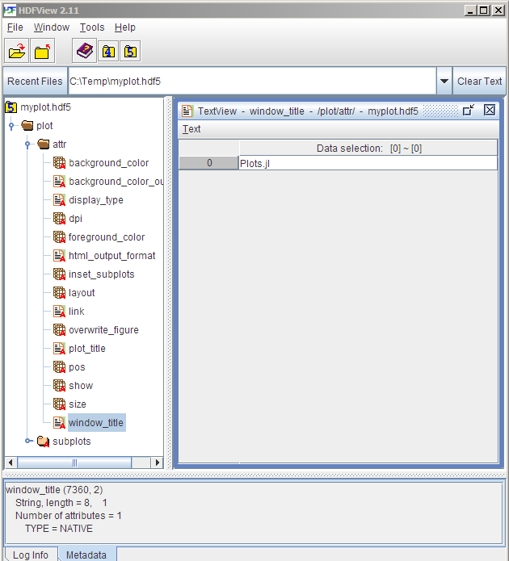

Backends
Backends are the lifeblood of Plots, and the diversity between features, approaches, and strengths/weaknesses was one of the primary reasons that I started this package.
For those who haven't had the pleasure of hacking on 15 different plotting APIs: first, consider yourself lucky. However, you will probably have a hard time choosing the right backend for your task at hand. This document is meant to be a guide and introduction to make that choice.
At a glance
My favorites: GR for speed, Plotly(JS) for interactivity, UnicodePlots for REPL/SSH and PythonPlot otherwise.
| If you require... | then use... |
|---|---|
| features | GR, PythonPlot, Plotly(JS), Gaston |
| speed | GR, UnicodePlots, InspectDR, Gaston |
| interactivity | PythonPlot, Plotly(JS), InspectDR |
| beauty | GR, Plotly(JS), PGFPlots/ PGFPlotsX |
| REPL plotting | UnicodePlots |
| 3D plots | GR, PythonPlot, Plotly(JS), Gaston |
| a GUI window | GR, PythonPlot, PlotlyJS, Gaston, InspectDR |
| a small footprint | UnicodePlots, Plotly |
| backend stability | PythonPlot, Gaston |
plot+data -> .hdf5 file | HDF5 |
Of course this list is rather subjective and nothing in life is that simple. Likely there are subtle tradeoffs between backends, long hidden bugs, and more excitement. Don't be shy to try out something new !
GR
The default backend. Very fast with lots of plot types. Still actively developed and improving daily.
Pros:
- Speed
- 2D and 3D
- Standalone or inline
Cons:
- Limited interactivity
Primary author: Josef Heinen (@jheinen)
Fine tuning
It is possible to use more features of GR via the extra_kwargs mechanism.
using Plots; gr()
x = range(-3, 3, length=30)
surface(
x, x, (x, y)->exp(-x^2 - y^2), c=:viridis, legend=:none,
nx=50, ny=50, display_option=Plots.GR.OPTION_SHADED_MESH, # <-- series[:extra_kwargs]
)Supported :subplot :extra_kwargs
| Keyword | Description |
|---|---|
| legend_hfactor | Vertical spacing factor for legends |
| legend_wfactor | Multiplicative factor influencing the legend width |
Supported :series :extra_kwargs
| Series Type | Keyword | Description |
|---|---|---|
:surface | nx | Number of interpolation points in the x direction |
:surface | ny | Number of interpolation points in the y direction |
:surface, :wireframe | display_option | see GR doc |
Plotly / PlotlyJS
These are treated as separate backends, though they share much of the code and use the Plotly JavaScript API. plotly() is the only dependency-free plotting option, as the required JavaScript is bundled with Plots. It can create inline plots in IJulia, or open standalone browser windows when run from the Julia REPL.
plotlyjs() is the preferred option, and taps into the great functionality of Spencer Lyon's PlotlyJS.jl. Inline IJulia plots can be updated from any cell... something that makes this backend stand out. From the Julia REPL, it taps into Blink.jl and Electron to plot within a standalone GUI window... also very cool. Also, PlotlyJS supports saving the output to more formats than Plotly, such as EPS and PDF, and thus is the recommended version of Plotly for developing publication-quality figures.
"backends_plotlyjs.png"Pros:
- Tons of functionality
- 2D and 3D
- Mature library
- Interactivity (even when inline)
- Standalone or inline
Cons:
- No custom shapes
- JSON may limit performance
Primary PlotlyJS.jl author: Spencer Lyon (@spencerlyon2)
MathJax
Plotly needs to load MathJax to render LaTeX strings, therefore passing extra keywords with extra_kwargs = :plot is implemented. With that it is possible to pass a header to the extra include_mathjax keyword. It has the following options:
include_mathjax = ""(default): no mathjax headerinclude_mathjax = "cdn"include the standard online version of the headerinclude_mathjax = "<filename?config=xyz>"include a user-defined file
These can also be passed using the extra_plot_kwargs keyword.
using LaTeXStrings
plotlyjs()
plot(
1:4,
[[1,4,9,16]*10000, [0.5, 2, 4.5, 8]],
labels = [L"\alpha_{1c} = 352 \pm 11 \text{ km s}^{-1}";
L"\beta_{1c} = 25 \pm 11 \text{ km s}^{-1}"] |> permutedims,
xlabel = L"\sqrt{(n_\text{c}(t|{T_\text{early}}))}",
ylabel = L"d, r \text{ (solar radius)}",
yformatter = :plain,
extra_plot_kwargs = KW(
:include_mathjax => "cdn",
:yaxis => KW(:automargin => true),
:xaxis => KW(:domain => "auto")
),
)"plotly_mathjax.html"Fine tuning
It is possible to add additional arguments to the plotly series and layout dictionaries via the extra_kwargs mechanism. Arbitrary arguments are supported but one needs to be careful since no checks are performed and thus it is possible to unintentionally overwrite existing entries.
For example adding customdata can be done the following way scatter(1:3, customdata=["a", "b", "c"]). One can also pass multiple extra arguments to plotly.
pl = scatter(
1:3,
rand(3),
extra_kwargs = KW(
:series => KW(:customdata => ["a", "b", "c"]),
:plot => KW(:legend => KW(:itemsizing => "constant"))
)
)PythonPlot
A Julia wrapper around the popular python package Matplotlib. It uses PythonCall.jl to pass data with minimal overhead.
Pros:
- Tons of functionality
- 2D and 3D
- Mature library
- Standalone or inline
- Well supported in Plots
Cons:
- Uses Python
- Dependencies frequently cause setup issues
Primary author: Steven G Johnson (@stevengj)
Fine tuning
It is possible to use more features of matplotlib via the extra_kwargs mechanism. For example, for a 3D plot, the following example should generate a colorbar at a proper location; without the extra_kwargs below, the colorbar is displayed too far right to see its ticks and numbers. The four coordinates in the example below, i.e., [0.9, 0.05, 0.05, 0.9] specify the colorbar location [ left, bottom, width, height ]. Note that for 2D plots, this fine tuning is not necessary.
using Plots; pythonplot()
x = y = collect(range(-π, π; length = 100))
fn(x, y) = 3 * exp(-(3x^2 + y^2)/5) * (sin(x+2y))+0.1randn(1)[1]
surface(x, y, fn, c=:viridis, extra_kwargs=Dict(:subplot=>Dict("3d_colorbar_axis" => [0.9, 0.05, 0.05, 0.9])))Supported :subplot :extra_kwargs
| Keyword | Description |
|---|---|
| 3dcolorbaraxis | Specifying the colorbar location [ left, bottom, width, height ] for a 3D plot |
PGFPlotsX
LaTeX plotting, based on PGF/TikZ.

Successor backend of PGFPlots backend.
Has more features and is still in development otherwise the same.
To add save a standalone .tex file including a preamble use attribute tex_output_standalone = true in your plot command.
Pros:
- Nice looking plots
- Lots of functionality (though the code is still WIP)
Cons:
- Tricky to install
- Heavy-weight dependencies
Authors:
- PGFPlots: Christian Feuersanger
- PGFPlotsX.jl: Kristoffer Carlsson (@KristofferC89), Tamas K. Papp (@tpapp)
- Plots <–> PGFPlotsX link code: Simon Christ (@BeastyBlacksmith), based on the code of Patrick Kofod Mogensen (@pkofod)
LaTeX workflow
To use the native LaTeX output of the pgfplotsx backend you can save your plot as a .tex or .tikz file.
using Plots; pgfplotsx()
pl = plot(1:5)
pl2 = plot((1:5).^2, tex_output_standalone = true)
savefig(pl, "myline.tikz") # produces a tikzpicture environment that can be included in other documents
savefig(pl2, "myparabola.tex") # produces a standalone document that compiles by itself including preambleSaving as .tikz file has the advantage, that you can use \includegraphics to rescale your plot without changing the size of the fonts. The default LaTeX output is intended to be included as a figure in another document and will not compile by itself. If you include these figures in another LaTeX document you need to have the correct preamble. The preamble of a plot can be shown using Plots.pgfx_preamble(pl) or copied from the standalone output.
Fine tuning
It is possible to use more features of PGFPlotsX via the extra_kwargs mechanism. By default it interprets every extra keyword as an option to the plot command. Setting extra_kwargs = :subplot will treat them as an option to the axis command and extra_kwargs = :plot will be treated as an option to the tikzpicture environment.
For example changing the colormap to one that is native to pgfplots can be achieved with the following. Like this it is possible to keep the preamble of latex documents clean.
using Plots; pgfplotsx()
surface(range(-3,3, length=30), range(-3,3, length=30),
(x, y) -> exp(-x^2-y^2),
label="",
colormap_name = "viridis",
extra_kwargs =:subplot)Further more additional commands or strings can be added via the special add keyword. This adds a square to a normal line plot:
plot(1:5, add = raw"\draw (1,2) rectangle (2,3);", extra_kwargs = :subplot)UnicodePlots
Simple and lightweight. Plot directly in your terminal. You won't produce anything publication quality, but for a quick look at your data it is awesome. Allows plotting over a headless node (SSH).
Pros:
- Minimal dependencies
- REPL plotting
- Lightweight
- Fast
Cons:
- Limited precision, density
Primary author: Christof Stocker (@Evizero)
Fine tuning
It is possible to use more features of UnicodePlots via the extra_kwargs mechanism.
using Plots; unicodeplots()
extra_kwargs = Dict(:subplot=>(; border = :bold, blend = false))
p = plot(1:4, 1:4, c = :yellow; extra_kwargs)
plot!(p, 2:3, 2:3, c = :red)Supported :subplot :extra_kwargs
| Keyword | Description |
|---|---|
| width | Plot width |
| height | Plot height |
| projection | 3D projection (:orthographic, perspective) |
| zoom | 3D zoom level |
| up | 3D up vector (azimuth and elevation are controlled using Plots.jl's camera) |
| canvas | Canvas type (see Low-level Interface) |
| border | Border type (:solid, :bold, :dashed, :dotted, :ascii, :none) |
| blend | Toggle canvas color blending (true / false) |
Supported :series :extra_kwargs
| Series Type | Keyword | Description |
|---|---|---|
all | colormap | Colormap (see Options) |
heatmap, spy | fix_ar | Toggle fixing terminal aspect ratio (true / false) |
surfaceplot | zscale | z axis scaling |
surfaceplot | lines | Use lineplot instead of scatterplot (monotonic data) |
Gaston
Gaston is a direct interface to gnuplot, a cross platform command line driven plotting utility. The integration of Gaston in Plots is recent (2021), but a lot of features are supported.

InspectDR
Fast plotting with a responsive GUI (optional). Target: quickly identify design/simulation issues & glitches in order to shorten design iterations.
Pros:
- Relatively short load times / time to first plot.
- Interactive mouse/keybindings.
- Fast & simple way to pan/zoom into data.
- Drag & drop Δ-markers (measure/display Δx, Δy & slope).
- Designed with larger datasets in mind.
- Responsive even with moderate (>200k points) datasets.
- Confirmed to handle 2GB datsets with reasonable speed on older desktop running Windows 7 (drag+pan of data area highly discouraged).
Cons:
- Mostly limited to 2D line/scatter plots
Primary author: MA Laforge (@ma-laforge)
HDF5 (HDF5-Plots)
Write plot + data to a single HDF5 file using a human-readable structure that can easily be reverse-engineered.

Write to .hdf5 file
hdf5() # Select HDF5-Plots "backend"
p = plot(...) # Construct plot as usual
Plots.hdf5plot_write(p, "plotsave.hdf5")Read from .hdf5 file
pythonplot() # Must first select some backend
pread = Plots.hdf5plot_read("plotsave.hdf5")
display(pread)Pros:
- Open, standard file format for complex datasets.
- Human readable (using HDF5view).
- Save plot + data to a single binary file.
- (Re)-render plots at a later time using your favourite backend(s).
Cons:
- Currently missing support for
SeriesAnnotations&GridLayout.- (Please open an "issue" if you have a need).
- Not yet designed for backwards compatibility (no proper versioning).
- Therefore not truly adequate for archival purposes at the moment.
- Currently implemented as a "backend" to avoid adding dependencies to
Plots.jl.
Primary author: MA Laforge (@ma-laforge)
Deprecated backends
PyPlot
matplotlib based backend, using PyCall.jl and PyPlot.jl. Superseded by PythonCall.jl and PythonPlot.jl. Whilst still supported in Plots 1.X, users are advised to transition to the pythonplot backend.
PGFPlots
LaTeX plotting, based on PGF/TikZ.
To add save a standalone .tex file including a preamble use attribute tex_output_standalone = true in your plot command.
Pros:
- Nice looking plots
- Lots of functionality (though the code is still WIP)
Cons:
- Tricky to install
- Heavy-weight dependencies
Authors:
- PGFPlots: Christian Feuersanger
- PGFPlots.jl: Mykel Kochenderfer (@mykelk), Louis Dressel (@dressel), and others
- Plots <–> PGFPlots link code: Patrick Kofod Mogensen (@pkofod)
Gadfly
A Julia implementation inspired by the "Grammar of Graphics".
Pros:
- Clean look
- Lots of features
- Flexible when combined with Compose.jl (inset plots, etc.)
Cons:
- Does not support 3D
- Slow time-to-first-plot
- Lots of dependencies
- No interactivity
Primary author: Daniel C Jones
Immerse
Built on top of Gadfly, Immerse adds some interactivity and a standalone GUI window, including zoom/pan and a cool "point lasso" tool to save Julia vectors with the selected data points.
Pros:
- Same as Gadfly
- Interactivity
- Standalone or inline
- Lasso functionality
Cons:
- Same as Gadfly
Primary author: Tim Holy
Qwt
My package which wraps PyQwt. Similar to PyPlot, it uses PyCall to convert calls to python. Though Qwt.jl was the "first draft" of Plots, the functionality is superceded by other backends, and it's not worth my time to maintain.
Primary author: Thomas Breloff
Bokeh
Unfinished, but very similar to PlotlyJS... use that instead.
Winston
Functionality incomplete... I never finished wrapping it, and I don't think it offers anything beyond other backends. However, the plots are clean looking and it's relatively fast.